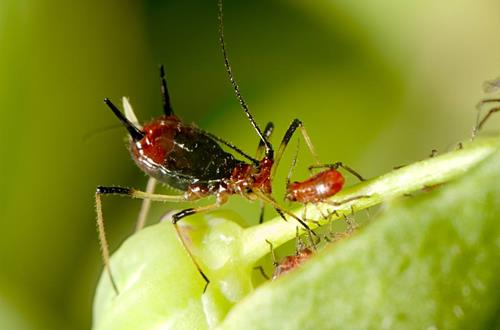
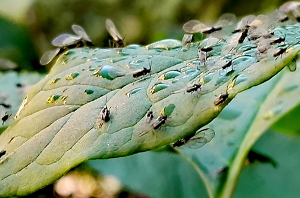
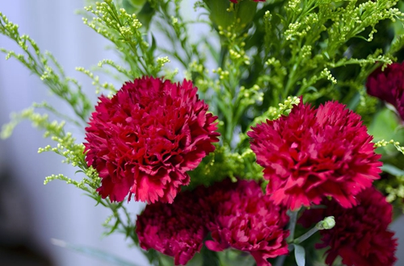

当前位置 : > 养花 >

光照对花有什么影响 光照对花朵生长的影响有哪些
光照对花有什么影响，光照对花朵生长的影响有哪些？光照无论是对人还是对动物来说都是不可
或缺的，但对于花卉来说更甚。那么光照对于花卉究竟有怎么样的影响呢？花卉对光照又有什么样的要求呢？室内养花需要注意什么问题呢？
阅读全文>>

墨兰叶子出现小黑点怎么办 墨兰叶子出现小黑点什么原因
墨兰叶子上出现了这种“小黑点”，花友一开始可能没有当一回事，以为不过是小毛病，结果随着
时间的推移，墨兰的状态越来越糟糕！这是怎么一回事？实际上，墨兰叶子上出现的“小黑点”，是植物“炭疽病”的表现，一旦叶子上开始出现了小黑点，随着这些黑点的逐渐增多和扩大，严重的还会导致植物死亡。如果您在花草的叶片上发现了黑点，不仅仅是您肉眼可见的出现了病症，其根系也不太乐观。
阅读全文>>
- 
花卉有病虫害怎么治 春天花卉最容易得的几种病虫害
春天万物复苏，虽然到处呈现一片生机勃勃的现象，但在这种现象之下也出现各种虫害，这段时
间是花友最为忙碌也是最为忧心的时间，虽然养殖的花草也恢复了生机但也容易出现各种黄叶、虫害、病害的现象。
阅读全文>>

水仙花烂根怎么办 水仙花烂根是什么原因
很多人都说水培植物养殖是最简单的，可也不全是，如水多了，水质不好，没营养等这些情况都
会影响水培植物的生长，期中处理水培植物烂根是最麻烦的，如果发现问题后没马上处理就容易引起植株的死亡，今天花匠大叔给大家介绍水仙花烂根怎么救的相关问题。
阅读全文>>
- 
家里有小飞虫怎么办 花盆里发现有小飞虫怎么处理
家里最怕有小虫子，原本以为冬天了又是这么冷的天气就不会有虫子了，可还是有些虫子是不怕
冷的，就比如小飞虫，在家里飞来飞去，让人很头痛。那么，这些小飞虫是哪里来的呢？怎样才能根除家中的小飞虫呢？下面介绍家里有小飞虫的原因及解决方法。
阅读全文>>
- 
康乃馨烂根怎么办 康乃馨烂根什么原因
每年5月份的第2个星期天，就是母亲节。在这个特殊的日子里，康乃馨也被赋予了特殊的意义。
在我看来，康乃馨最是温柔不过，它花色温柔植株雅致，花期于每年5月-8月，果期则在8月-9月，在最温暖的日子里，都有着它的身影。
阅读全文>>